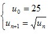

|
|
Nom et Prénom : Saad Eljabli / Groupe : B0202 / Filiére : SMI S3 / Code Apogée : 21000710
Dans ce cours, nous allons voir ce que sont des suites adjacentes, puis nous verrons des propriétés de convergence des suites et étudierons plus précisément le cas des suites définies par une relation de récurrence. Cela nous amènera ensuite à parler du raisonnement par récurrence qui permet de réaliser des démonstrations de propriétés mathématiques
Pour rappel, une suite convergente est une suite qui tend vers un certain nombre, appelé limite de la suite, lorsque n tend vers l'infini. C'est donc une suite u telle qu'il existe un nombre réel l tel que lim Un = 1. Une suite qui n'est pas convergente est dite divergente.
Deux suites adjacentes sont deux suites, l'une croissante, l'autre décroissante, telles que lim Un - Vn = 0> : les termes de u et v se rapprochent lorsque n tend vers l'infini.
- La suite définie pour tout n>0 par Un = 2 - 1/n est croissante, monotone, majorée, minorée, bornée et convergente. Sa limite est 2 lorsque n tend vers +∞. - La suite définie pour tout n par un=cos(n) est majorée, minorée, bornée et divergente.
Une suite croissante est toujours minorée par son premier terme. Une suite décroissante est toujours majorée par son premier terme. Une suite monotone peut être convergente ou divergente.
Toute suite croissante et majorée est convergente et toute suite décroissante et minorée est convergente (mais attention, leur limite n'est pas forcément le majorant ou le minorant)
Une suite définie par récurrence est une suite dont on connaît un terme et une relation reliant pour tout n terme un+1 au terme Un
Par exemple, la suite  est définie par récurrence
À l'aide d'un dessin, il est possible de déterminer une valeur approximative des termes d'une suite définie par récurrence
Le raisonnement par récurrence est un type de raisonnement qui permet de démontrer qu'une propriété qui dépend d'un entier naturel n est vraie pour tout n.
Une suite convergente est une suite dont les termes tendent vers un nombre l appelé la limite de la suite. Par exemple, la suite Un = 2-1/n converge vers 2 car lim Un = 2
Formellement on dit qu'une suite u converge vers une limite l si pour tout nombre symbole epsilon fixé aussi petit que l'on veut, il existe un rang rang n0 de la suite à partir duquel tous les termes sont à une distance de l inférieure à symbole epsilon. Autrement dit :
Si une suite n'est pas convergente, on dit qu'elle est divergente. Une suite divergente ne tend pas formcément vers l'infini. Les suites divergentes peuvent avoir une limite infinie (par exemple Un = n) ou ne pas avoir de limite (par exemple Un = cos(n)). Une suite suite admet pour limite infini si pour tout nombre A fixé, il existe un rang rang à partir duquel tous les nombres suite sont plus grands que A. On écrit aussi:
On peut trouver une définition similaire pour une suite qui tend vers infini.
- Si une suite converge alors sa limite est unique. - Toute suite convergente est bornée, c'est à dire qu'elle admet un minimum et un maximum
- Toute suite extraite (c'est à dire une sous-suite formée à partir des termes de la suite) d'une suite qui converge vers une limite l converge aussi vers l : par exemple pour la suite Un = 2-1/n , Un->2 et Un->2 aussi
- La somme de deux suites convergentes est une suite qui converge vers la somme des 2 limites, et le produit de deux suites convergentes est une suite qui converge vers le produit des deux limites.
Une valeur d'adhérence d'une suite est un nombre autour duquel, dans un voisinage aussi petit que l'on veut, la suite possède une infinité de termes. Ce n'est pas nécessairement la limite de la suite mais la limite d'une suite est toujours une valeur d'adhérence. Par exemple, la suite suite admet deux valeurs d'adhérences qui sont -1 et 1.
Une suite de Cauchy est une suite qui vérifie le critère de Cauchy encadré ci-dessous. C'est une suite dont les termes sont de plus en plus proches les uns des autres quand la suite avance. Une suite convergente est toujours de Cauchy. Mais sur un ensemble donné une suite de Cauchy n'est pas toujours convergente
En effet si on se place dans l'ensemble Q et que l'on considère la suite des approximations décimales de (U0 = 3 , U1 = 3 , 1 , U2 = 3 , 14,...), cette suite est de Cauchy mais comme pi, c'est une suite non convergente dans son espace de définition.
Un espace dans lequel les suites de Cauchy sont toujours convergentes s'appelle un espace complet. Dans R , toutes les suites de Cauchy convergent,R est donc un espace complet. Mais Q n'est pas complet.
En écriture mathématique, on dit qu'une suite Un est de Cauchy si
c'est à dire que pour nombre e fixé aussi petit que l'on veut, on peut toujours trouver un rang à partir duquel la distance entre n'importe quels termes de la suite est inférieure à e
|
|